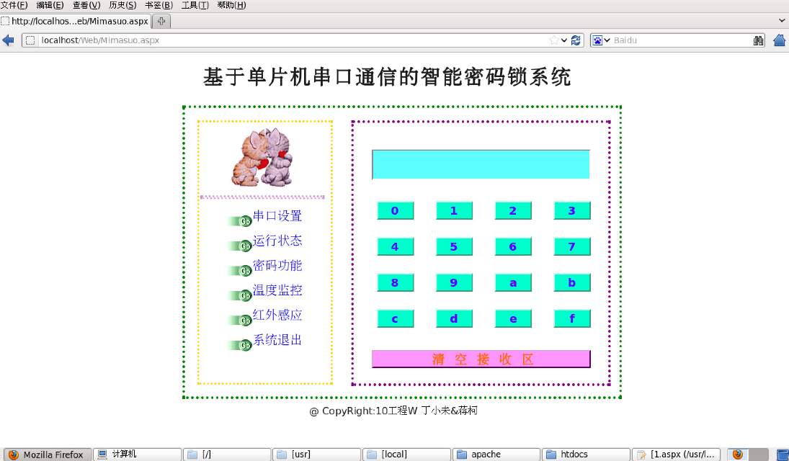

单片机+.NET+CentOS智能密码锁系统(纪念篇) Posted on 2016-11-10 新入手了一个Mac，16G内存的，如果想玩Windows的话还是不太方便，于是我就想创建一个虚拟机玩玩，找到移动硬盘翻到之前的虚拟机系统的文件，我就安装到Mac上，打开虚拟机首先映入眼帘的就是全屏状态下的火狐浏览器，上面是我大学时候单片机课程设计课我做的一个基于单片机和.NET的智能密码锁系统，我觉得那时候做的页面还是很用心做的，现在看起来还是很舒服，特此纪念一下那时候对计算机技术的研究激情！ 